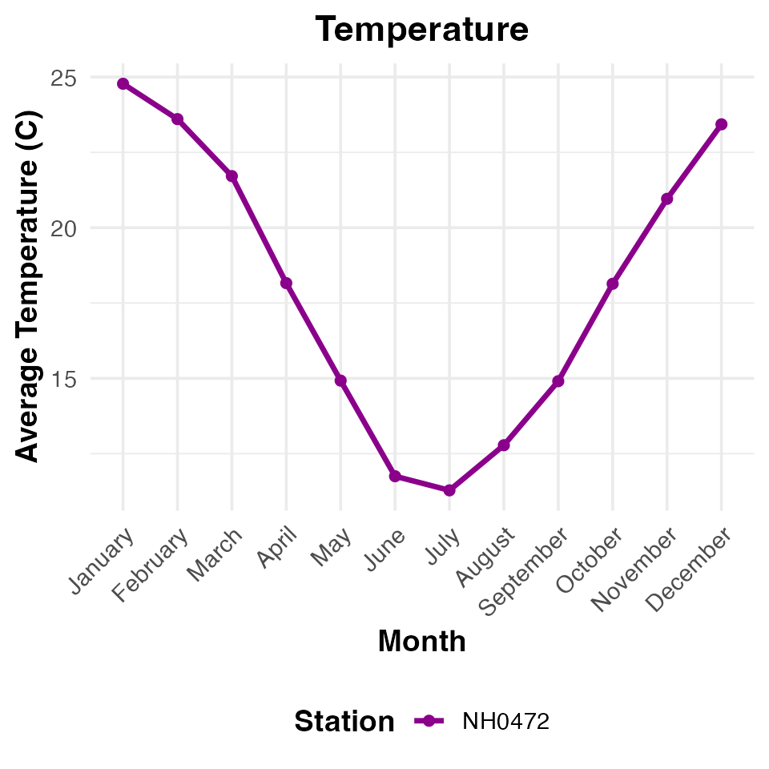

Introduction to goatR
goatR is a package developed to assist in the analysis and visualization of environmental data, specifically focusing on climate metrics such as precipitation and temperature. This package aims to simplify data processing and provide ready-to-use functions for effective exploratory data analysis and presentation.
The primary goal of goatR is to make climate data more accessible and actionable for researchers and practitioners by offering functions that streamline common data manipulation tasks and produce insightful visualizations.
Key Features
- Data Import and Cleaning: Functions to easily load and clean meteorological datasets, such as temperature and precipitation data, ensuring that the data is consistent and ready for analysis.
- Visualization Tools: Pre-built functions for creating informative plots, including monthly temperature and precipitation visualizations.
- Summary Statistics: Tools for generating tables and reports with key statistics, helping users quickly assess trends and anomalies in climate data.
Getting Started
Below is a quick demonstration of some of the core functionalities of goatR. We will walk through how to load a dataset, clean it, and visualize the data.
Example: Loading and Plotting Climate Data
# Download datasets
download_datasets()
#> File downloaded successfully to: datasets-raw/NH0472.csv
#> File downloaded successfully to: datasets-raw/NH0910.csv
#> File downloaded successfully to: datasets-raw/NH0046.csv
#> File downloaded successfully to: datasets-raw/NH0098.csv
#> File downloaded successfully to: datasets-raw/NH0437.csv
#> File downloaded successfully to: datasets-raw/metadatos_completos.csv
# Load sample dataset
NH0472 <- read_datasets("NH0472")Once the data is loaded, you can proceed to visualize it using the built-in plotting functions.
# Plot monthly precipitation
goatR::monthly_precipitation_plot(NH0472)
# Plot monthly temperature
goatR::monthly_temperature_plot(NH0472)
These functions provide an easy way to generate consistent, publication-quality graphics that help in understanding the seasonal and monthly trends in the climate data.
Summary Tables
In addition to visualizations, goatR also allows you to generate summary tables that provide key insights into the data.
# Generate a summary table for temperature
temp_summary <- goatR::temperature_summary_table(NH0472)
# Display the summary table
temp_summary
#> # A tibble: 1 × 6
#> id average_temperature max_temperature min_temperature standard_deviation
#> <chr> <dbl> <dbl> <dbl> <dbl>
#> 1 NH0472 18.0 34.8 0.55 5.94
#> # ℹ 1 more variable: total_days <int>The summary tables include information such as average monthly temperatures, standard deviations, and other statistics that are valuable for further analysis.
Conclusion
goatR is designed to facilitate the analysis of climate data, providing functions that help users to quickly prepare, visualize, and interpret environmental data. Whether you are a researcher analyzing climate trends or an educator needing to demonstrate climate variability, goatR offers a user-friendly set of tools to achieve your goals.
To learn more about goatR’s functionalities and see detailed examples, please refer to the other vignettes and the reference manual.
For a comprehensive overview, please visit the goatR documentation.